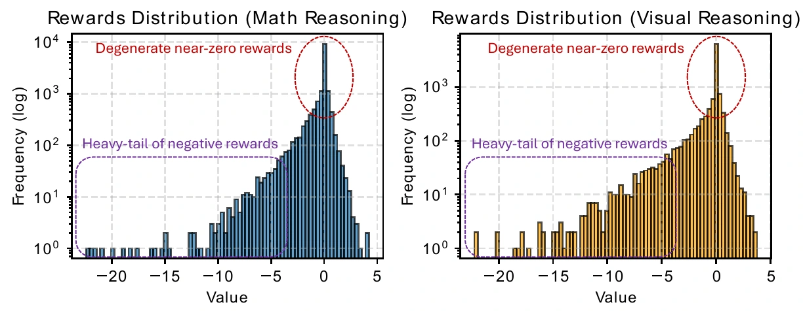
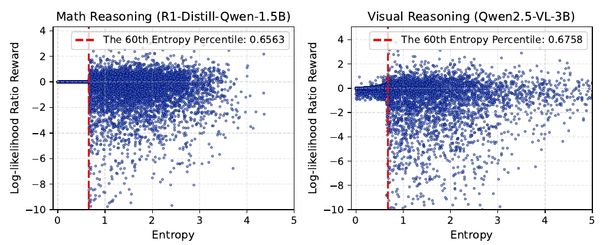
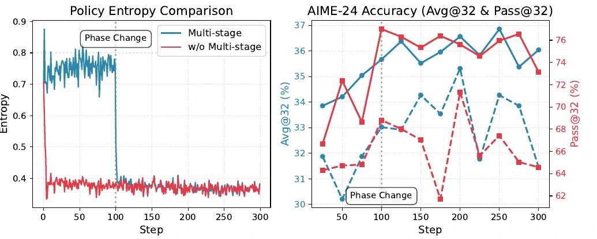
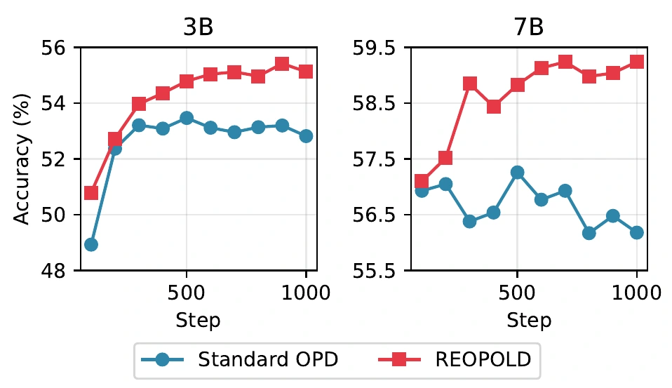
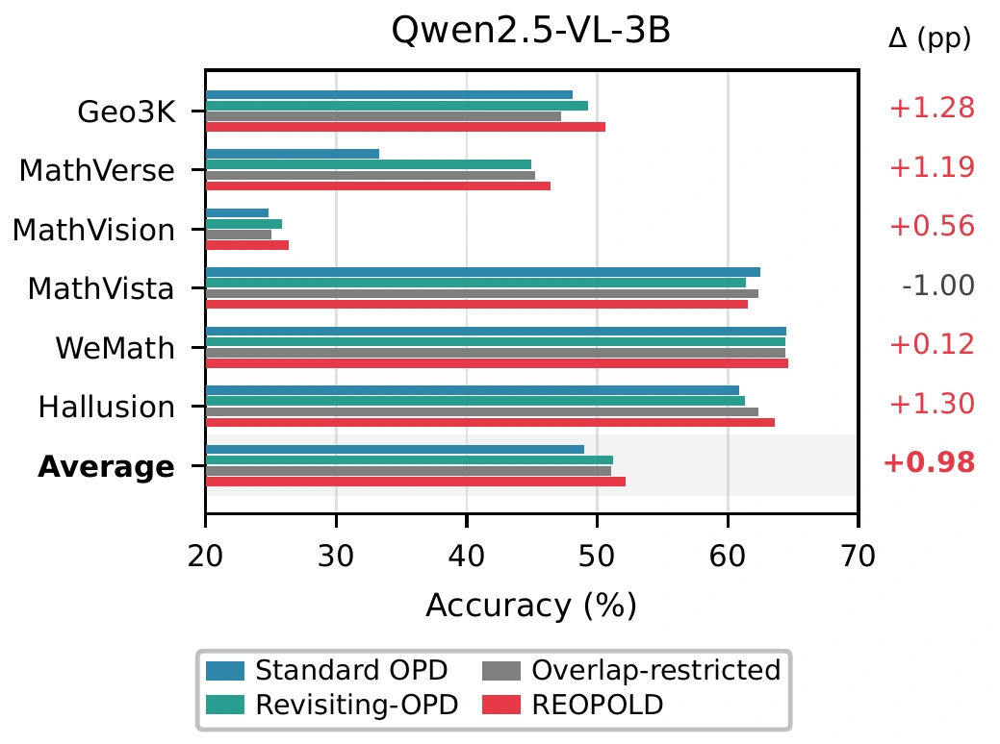
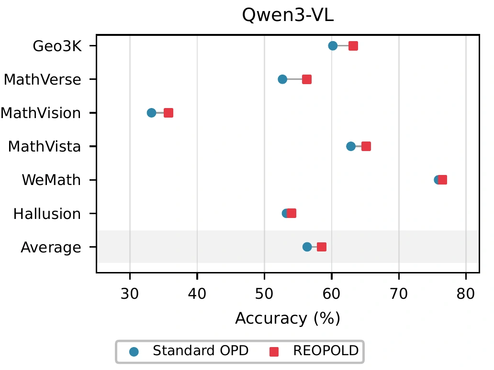

01Where
Entropy-guided
token selection
During refinement, select the top-β fraction of tokens by student entropy. Concentrate supervision on decisions the student has not resolved.
Mt = 𝟙[Ht ≥ τβ]
Section 3.1REOPOLD Relaxed On-Policy Distillation
Microsoft
Not every teacher signal deserves the same update. REOPOLD selects uncertain tokens, bounds extreme negative credit, and shifts from exploration to refinement to make on-policy reasoning distillation more stable and sample-efficient.
Up to 12× fewer generated sequences
vs. reported RL baselines on AIME-25.
7B student vs. 32B teacher
at comparable visual reasoning Pass@K.
Mathematical reasoning, visual reasoning,
and agentic visual tool use.
Sampled-token OPD learns from the teacher on the student's own trajectories. The bottleneck is how that feedback is allocated.
Teacher and student often agree on predictable tokens. Uniform aggregation spends normalization mass on nearly inactive signals, diluting useful updates.
When the teacher assigns very low probability to a sampled token, its log-ratio credit becomes strongly negative. These rare corrections can suppress plausible reasoning paths too early.
of the measured update-energy proxy comes from the bottom 1% of credits in early standard OPD training.
95.9% math · 97.8% visual / Table 1

REOPOLD changes which teacher credits enter the update, their maximum negative magnitude, and the allocation rule over training.
During refinement, select the top-β fraction of tokens by student entropy. Concentrate supervision on decisions the student has not resolved.
Clip extreme negative log-ratios to a finite floor. Preserve ordinary token credits without letting outliers dominate the update.
Early: reject excessively negative credits. Later: select high-entropy tokens and retain their corrections with bounded negative credit.
Early training rejects credits below the floor, while retaining ordinary credits regardless of entropy.
Illustrative tokens, credits, and entropies; not an experimental trace. Teacher credits and masks are stop-gradient quantities. The objective is normalized over selected tokens.


Improvements in average accuracy across mathematical reasoning, multimodal reasoning, and agentic visual tool use.
SkyWork-OR1-Math-7B → DeepSeek-R1-Distill-Qwen-1.5B
| Method | AIME-24 | AIME-25 | AMC-23 | MATH-500 | Minerva | Olympiad | Average |
|---|---|---|---|---|---|---|---|
| Teacher · 7B | 69.8 | 52.3 | 94.1 | 95.8 | 49.3 | 73.5 | 72.5 |
| Base student | 28.6 | 22.7 | 62.6 | 82.9 | 26.4 | 43.6 | 44.4 |
| + GRPO | 31.8 ±1.0 | 23.7 ±0.9 | 62.0 ±1.1 | 85.4 ±0.6 | 33.8 ±0.3 | 49.8 ±0.6 | 47.8 ±0.3 |
| + SFT | 33.5 ±1.5 | 24.6 ±1.9 | 76.1 ±1.2 | 86.6 ±0.8 | 36.4 ±0.8 | 55.6 ±0.8 | 51.5 ±0.9 |
| + Standard OPD | 37.1 ±1.4 | 30.6 ±0.6 | 80.2 ±0.9 | 88.0 ±0.5 | 34.6 ±0.4 | 56.0 ±0.8 | 54.4 ±0.2 |
| + REOPOLD | 41.6 ±1.1 | 32.6 ±0.4 | 83.0 ±1.2 | 89.2 ±0.4 | 38.6 ±0.7 | 57.3 ±0.5 | 57.1 ±0.3 |
AIME-24, AIME-25, and AMC-23: Avg@32. Other benchmarks: Pass@1. Trained-student results report mean ± standard deviation over five runs, as reported in the paper. Temperature 0.6; top-p 0.95.
Qwen2.5-VL-32B-Instruct + NoisyRollout → Qwen2.5-VL-3B / 7B-Instruct
| Model / method | Geo3K | MathVerse | MathVision | MathVista | WeMath | Hallusion | Average |
|---|---|---|---|---|---|---|---|
| Teacher · 32B | 56.74 | 58.86 | 39.82 | 78.30 | 75.51 | 72.45 | 63.61 |
| 3B · Base | 26.46 | 35.58 | 22.83 | 59.40 | 53.41 | 61.51 | 43.20 |
| 3B · Standard OPD | 48.09 | 33.25 | 24.78 | 62.50 | 64.48 | 60.83 | 48.99 |
| 3B · REOPOLD | 50.58 | 46.40 | 26.39 | 61.50 | 64.60 | 63.62 | 52.18 |
| 7B · Base | 39.77 | 45.72 | 25.05 | 67.80 | 64.77 | 65.62 | 51.46 |
| 7B · Standard OPD | 51.75 | 47.71 | 28.79 | 71.27 | 70.06 | 69.51 | 56.51 |
| 7B · REOPOLD | 53.58 | 51.43 | 29.21 | 72.40 | 69.77 | 70.14 | 57.76 |
Means shown for readability; Table 4 includes standard deviations over five runs for reproduced results. Gains are in the overall average, not every individual benchmark.
Pixel-Reasoner-7B → SFT-initialized Qwen2.5-VL-3B-Instruct
| Method | Pixel | V-Star | InfoVQA | TallyQA | Average |
|---|---|---|---|---|---|
| Teacher · 7B | 64.00 | 84.29 | 74.37 | 73.69 | 74.05 |
| SFT student · 3B | 46.00 | 71.20 | 34.88 | 56.91 | 52.25 |
| + GRPO | 60.00 | 76.96 | 59.47 | 60.56 | 64.25 |
| + Standard OPD | 52.00 | 76.55 | 61.09 | 64.34 | 63.27 |
| + REOPOLD | 57.00 | 77.43 | 63.12 | 65.43 | 65.75 |
Temperature 1.0; top-p 1.0. REOPOLD improves the four-task average over GRPO without its task-specific reward design; GRPO remains stronger on the Pixel split.
Reading the efficiency numbers. The up-to-12× comparison uses published RL training-sequence budgets and does not control all cross-study training conditions. It is not a wall-clock or FLOP speedup. The 3.32× figure measures inference latency for the 7B student against the 32B teacher at comparable Pass@K. Main math tables use 300 training steps; Figure 1 also includes a 600-step REOPOLD run.
Selective allocation also extends to cross-family transfer, privileged self-distillation, and newer vision-language models.
Phi-4-Mini-Reasoning → R1-Distill-Qwen-1.5B
Average accuracy across six mathematical reasoning benchmarks, with sequence alignment across vocabularies.
Qwen2.5-VL-3B as both teacher and student
Four-benchmark average accuracy. Only the teacher sees privileged information such as ground-truth solutions.



On-policy distillation (OPD) is a promising approach for transferring reasoning capabilities to capacity-constrained models, yet sampled-token OPD often suffers from entropy collapse and negative transfer. We identify uniform credit allocation as a key bottleneck: existing objectives obtain dense teacher feedback on student-generated trajectories, but apply it uniformly across sampled tokens despite highly heterogeneous token-level signals. Most tokens carry redundant near-zero credit, while rare heavy-tailed negative credits can dominate updates and prematurely suppress plausible reasoning trajectories. We introduce REOPOLD (Relaxed On-Policy Distillation), a framework that relaxes this uniform assignment by controlling where teacher feedback is applied, how strongly it affects the update, and when the allocation rule changes during training. Across diverse reasoning tasks, REOPOLD improves sampled-token OPD over recent post-training baselines with up to 12× higher sample efficiency, and extends to cross-vocabulary distillation, self-distillation, and test-time scaling.
If you find this work useful, please cite our paper.
@inproceedings{ko2026reopold,
title = {Scaling Reasoning Efficiently via Relaxed On-Policy Distillation},
author = {Ko, Jongwoo and Abdali, Sara and Kim, Young Jin and Chen, Tianyi and Cameron, Pashmina},
booktitle = {Advances in Neural Information Processing Systems},
year = {2026},
url = {https://arxiv.org/abs/2603.11137}
}